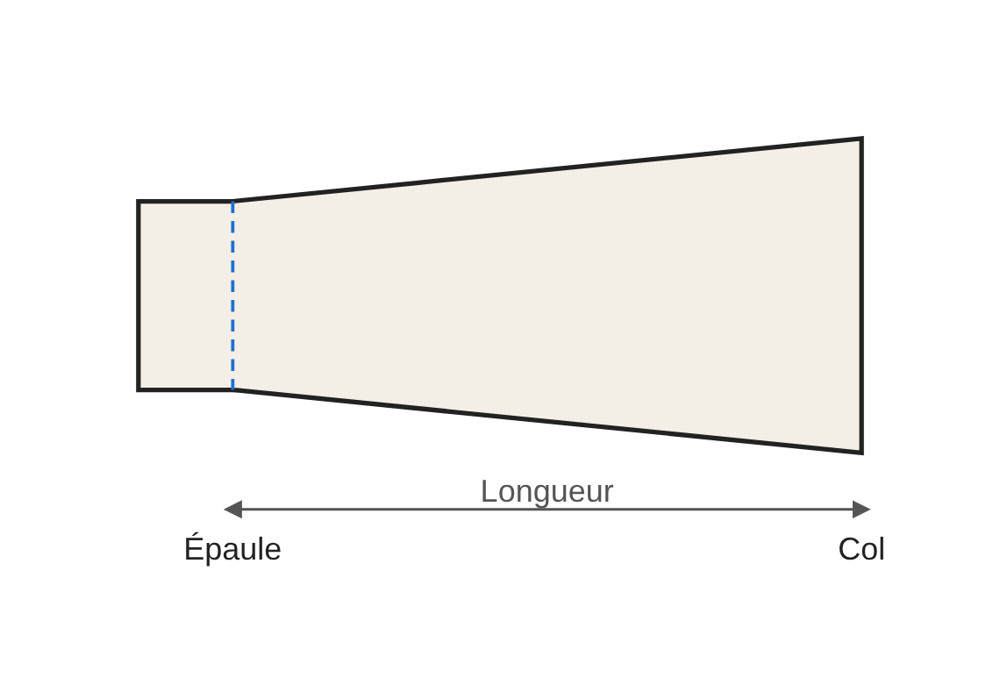
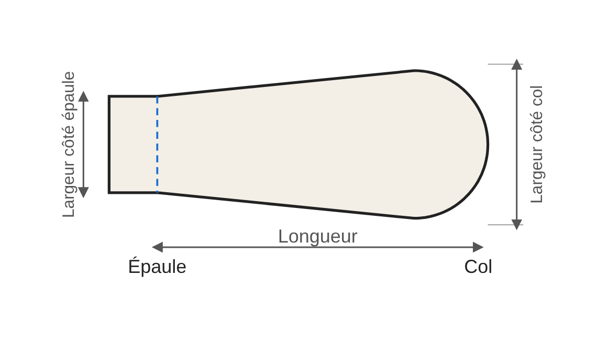
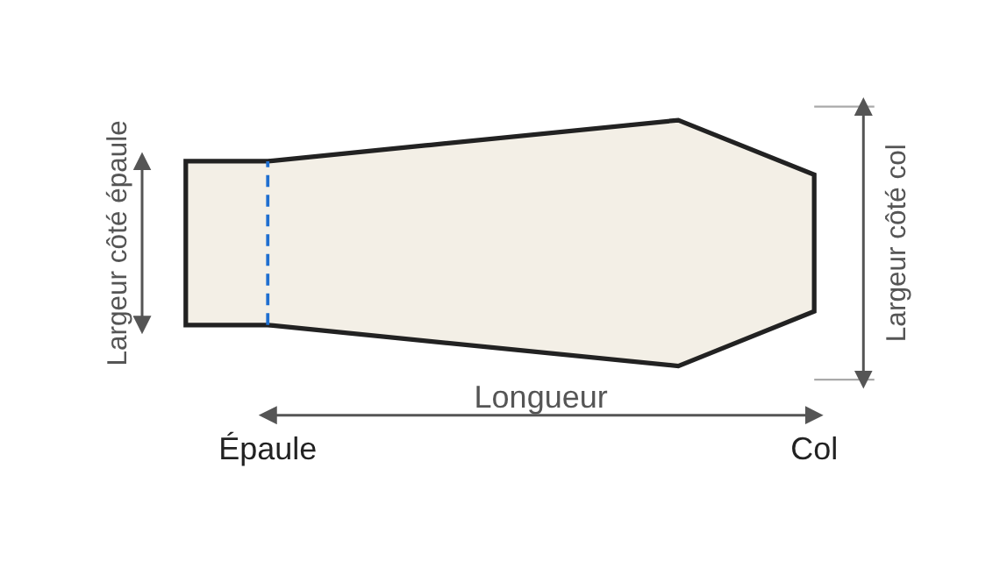
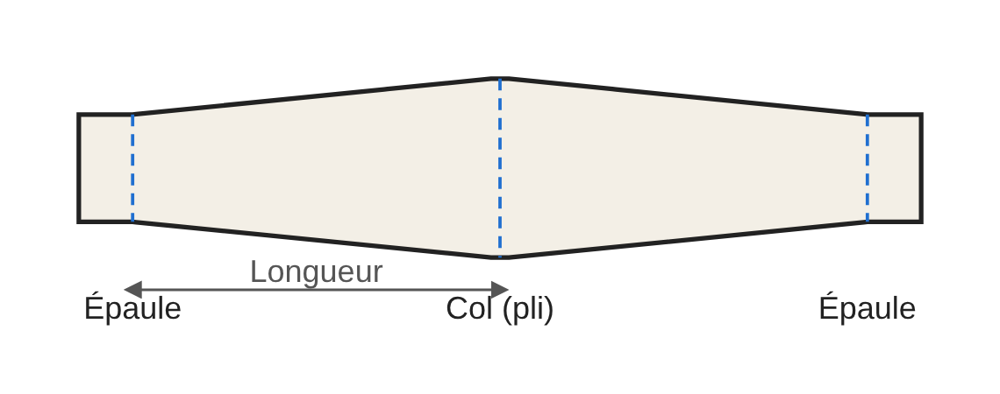

Guide des options : épaulettes
À part dans le domaine militaire, les épaulettes n'ont aucune utilité pratique. Elles ne sont là que pour le style et, comme des goûts et des couleurs on ne discute pas, l'éventail est large : du plus classique au plus excentrique. Les sahariennes, du fait de leur origine militaire, s'accommodent particulièrement bien des épaulettes.
Les mesures de base
Une épaulette est une bande de tissu qui va de l'épaule au col. Le côté épaule est destiné à être cousu lors de l'assemblage du buste avec les manches ; l'autre extrémité, le côté col, reste libre et se ferme selon votre choix. Elle se compose de deux pièces : coupez 2 exemplaires par épaulette (4 pour une paire). Trois mesures la définissent :
- Longueur : de l’épaule au col. Choisissez-la selon votre morphologie et le rendu souhaité : mesurez la distance de l’épaule au col sur votre vêtement, puis retirez la marge que vous voulez laisser côté col.
- Largeur côté épaule : largeur à l’extrémité cousue dans la couture d’épaule.
- Largeur côté col : largeur à l’extrémité libre. Si les deux largeurs sont égales, l’épaulette est un rectangle ; si la largeur côté col est plus grande, elle s’élargit vers le col (forme de trapèze).
Les quatre formes
Ces quatre formes sont simplement parmi les plus courantes. Ce guide n’a pas la prétention d’être exhaustif : d’autres formes sont envisageables, et les suggestions sont les bienvenues via le formulaire « Votre avis ».




Trapèze. L’extrémité côté col est droite. C’est la forme la plus simple à réaliser.
Arrondie. L’extrémité côté col est arrondie. Une seule option : la taille de l’arrondi, en proportion de la longueur. Plus la valeur est grande, plus l’arrondi commence tôt. L’arrondi dépasse légèrement la longueur indiquée.
Biseautée. Les deux angles côté col sont coupés en biseau, sans que l’extrémité soit forcément en pointe. Deux options : la longueur du biseau le long du bord (en proportion de la longueur de l’épaulette) et la forme de l’extrémité, de 1 (pas de biseau, extrémité droite) à 0 (pointe franche). Entre les deux, l’extrémité est plus ou moins large.
Double (pliée en deux). Chaque pièce porte un côté épaule à ses deux extrémités. Une fois les deux pièces assemblées (endroit contre endroit, puis retournées), l’épaulette finie est pliée en deux : le pli se trouve du côté du col (ligne en pointillés bleus au milieu du patron) et les deux extrémités sont cousues ensemble dans la couture d’épaule, lors de l’assemblage du buste avec les manches. La partie proche du cou est souvent fixée, à la machine, par une couture sur la face interne avant l’assemblage avec les manches, ce qui rend la couture « invisible ». Ce type d’épaulette est stylistiquement intéressant par le volume qu’il lui confère.
Fermeture
Le patron ne prévoit pas de fermeture : le type (bouton, bouton-pression, velcro…) et son emplacement sont au choix de l'utilisateur, à repérer sur votre vêtement.
Marge de couture et rempli
La marge de couture est réglable dans l’assistant (1 cm par défaut). Le rempli (pointillés bleus du patron) se règle aussi (1,5 cm par défaut) : côté épaule, il sert à la couture lors de l’assemblage des manches et du buste ; sur le côté, il sert au retournement de la pièce.
Conseils de couture
- Selon le tissu et le style choisi, un thermocollant peut être requis sur une ou deux faces.
- Repassez au fer le pli du repli avant de retourner la pièce, pour faciliter la mise en forme finale.
- Dégarnissez bien les angles pour faciliter la remise en forme après retournement.
- Plus le tissu est épais, moins l'angle doit être aigu, pour faciliter la mise en forme.
- Le surpiquage final de la pièce finie est un plus.